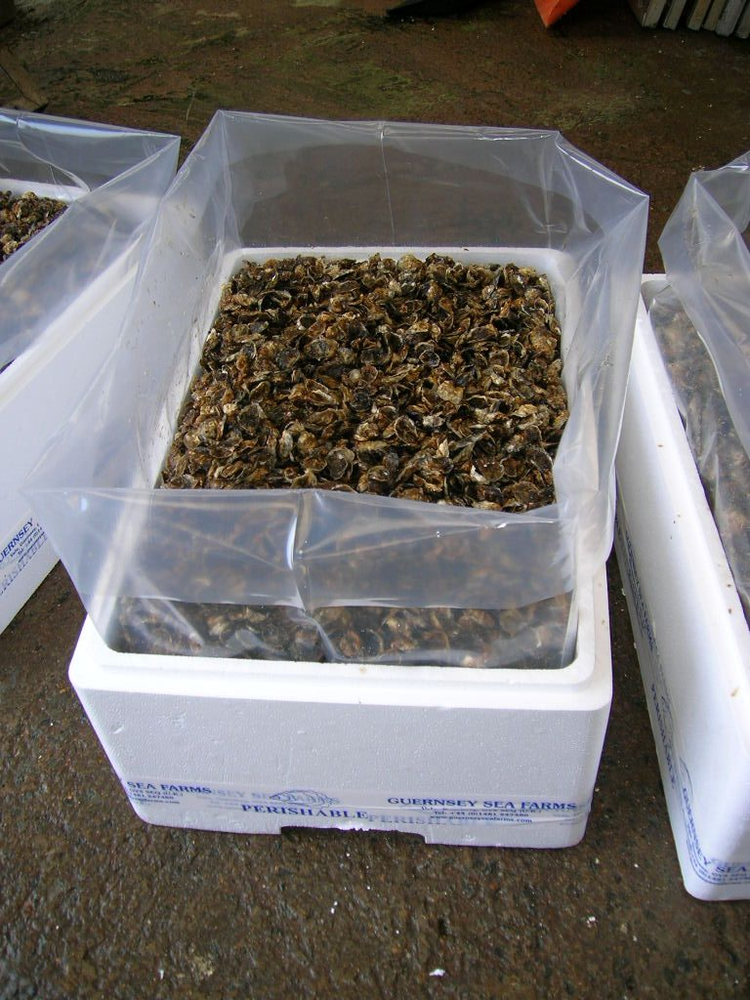

Industry
Bulk Packaging for Food & Beverage
Food-grade bulk transport lives or dies on contamination control. Every product recommended here is manufactured under ISO 22000 food safety management, in the same facilities, to the same standard, every time.
The challenge
One contaminated batch costs more than the packaging ever saves
Food and beverage shippers can't inspect the inside of a container once it's sealed — the packaging has to be trustworthy by design, not by inspection. Single-use flexitanks and liners remove the batch-to-batch cross-contamination risk that comes with reused or poorly-cleaned bulk containers.
- ISO 22000 certified food safety management across every relevant product line
- Food-grade contact materials on flexitanks, dry bulk liners and inner liners
- Single-use, no cleaning cycle — no shared-tank contamination risk between loads

Recommended for food & beverage
Three product families for food-grade bulk transport

Flexitanks for Liquids
ISO 22000 food-grade contact materials for bulk liquid ingredients such as wine concentrate and edible oils.
View flexitanks
Dry Bulk Container Liners
Food-grade back fill and top fill liners for grain, seed and powdered food ingredients.
View linersIndustrial Packaging
Bespoke inner liners — already supplied for seafood handling to a UK food industry client.
View packagingWhy food & beverage manufacturers choose us
Certification your quality team can verify
Shipping a new food-grade product?
Tell us the product and volume — we’ll confirm the right food-grade format.